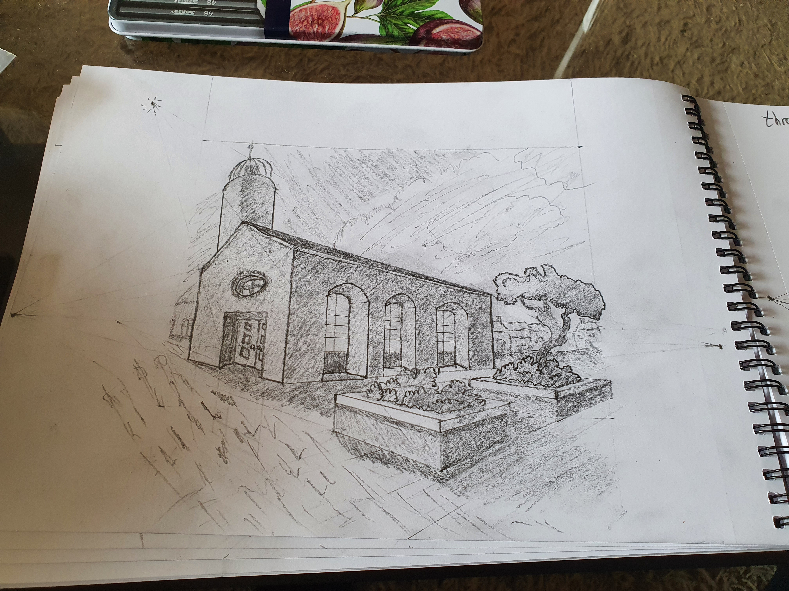
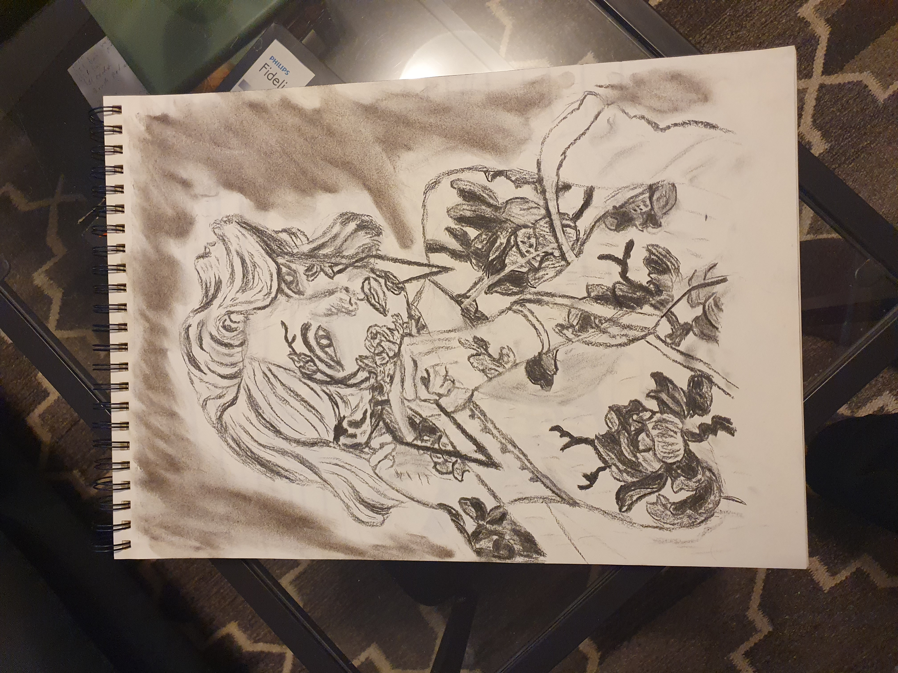
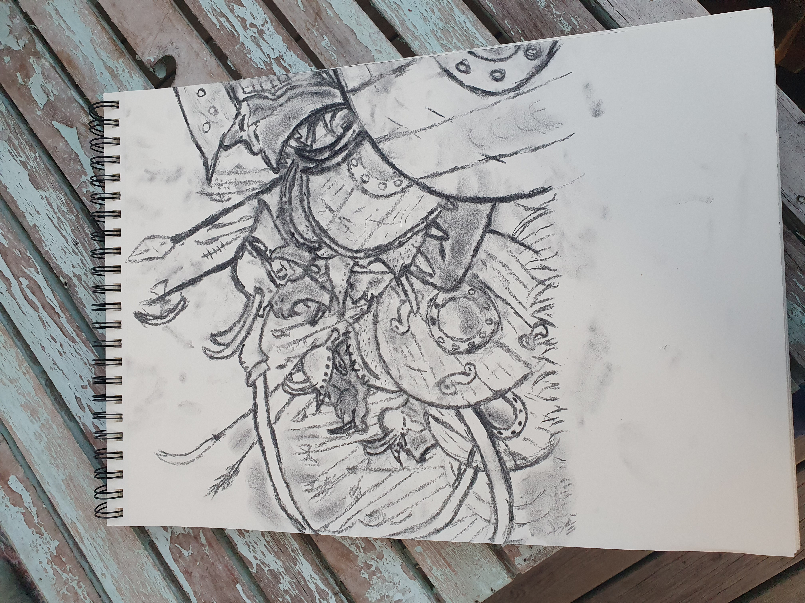

Games
The Ultimate Drawing Course


What I learned
- How to draw the human face and figure
- The fundamentals drawing art
- How to draw realistic light and shadow
- The importance of Value & contrast when drawing
- still life drawings, perspective drawings, and adding textures
Type: Learning Project
Medium: Traditional Drawing
Tools: Pencil, Eraser
Focus: Perspective, Shading, Form, Anatomy, Lightning
About
This is a course I took to learn the fundamentals of drawing with pen and paper. When I first set off on my game dev journey, I had not intention of becoming an artist, and initially the plan was to collaborate with someone else who would take care of the process of drawing the art for the game.
But for one reason or another I decided to do it myself, which is why I took this course to learn to fundamentals of drawing with just a pencil before stepping into the digital space and making the assets for my game. And I am glad I made that decision, because drawing the art for my games has become one of my favourite parts of the game making process, and drawing in generall has become one of my favourite hobbies ever since.
